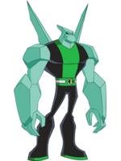
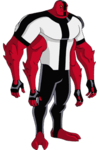

Diamond Head

Diamond head is a Petrosapien from Petropia. He is a living crystal. Petrosapiens have the ability to project crystals from their hand and minor shapeshifting abilities with their arms for leverage or use in combat.
Alien X

Alien X is the DNA sample of celestialsapeans, a race of Omnipotent beings. They have split personalities inside Alien X's body, Serena and Bellicus that has to agree and come to terms for Ben to be able to do anything.
Four Arms

Four Arms is a Tetramand from the planet Khoros. They are a physically strong race of beings who are tough, well built and loves fighting above all. While Tetramand technology may not fare all that well with the rest of the universe, they are famous for their tough alloy, which is sought out across the universe, primarily for spaceship engines.